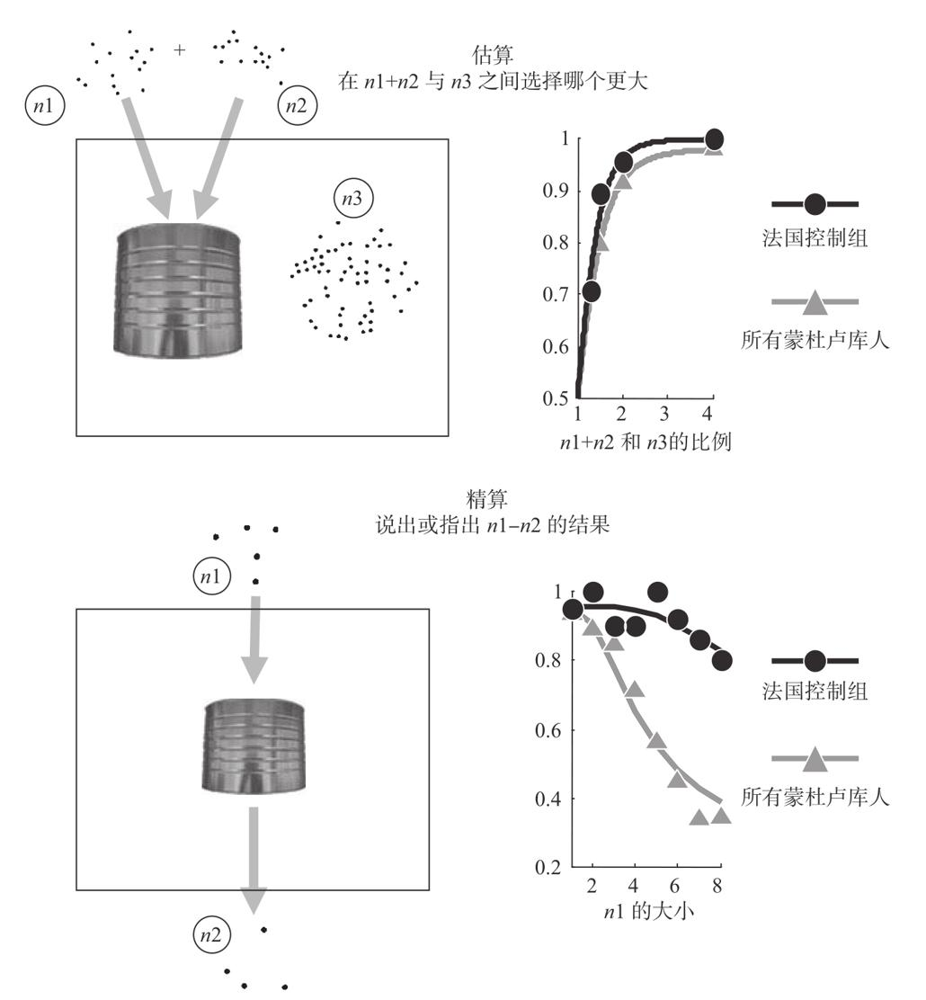
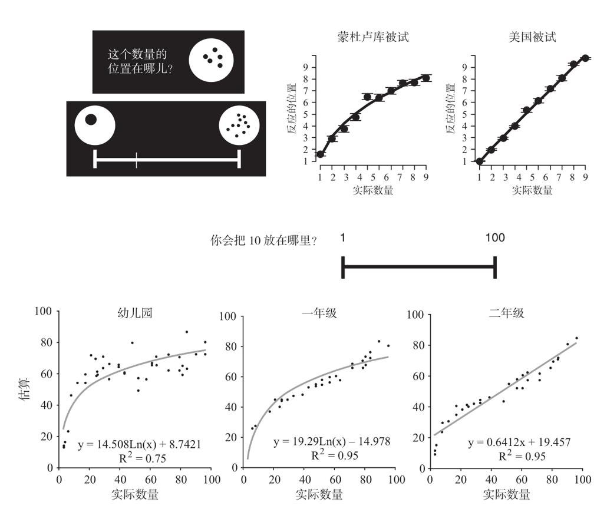

人类几乎天生就懂数学……这是一门最简单的科学，没有谁会反驳这个显而易见的事实：即使是门外汉或者是完全没受过教育的文盲都知道怎么数数和估算。
罗杰·培根（Roger Bacon）
目前我们仍不清楚，当儿童突然明白精确数字的离散无限性（discrete infinity）时，他们的脑子里发生了什么。然而，我们知道这个过程不是自发的，而是人脑成熟过程中以某种方式被激发而来的。这是一个文化的产物。伟大的数学家利奥波德·克罗内克尔（Leopold Kronecker）错误地断言：“上帝创造了整数，其余都是人类的发明。”其实，整数也是人类创造的，整数只出现在发明了计数概念的人类文化中。在由数词组成的计数系统被人类发明出来之后，这个计数系统才能够表达出12和13的不同。
我们能够认识到精确算术的本质是文化的，这要归功于语言学家皮埃尔·皮卡（Pierre Pica）和彼德·戈登（Peter Gordon）这类富有勇气的研究者，他们为了调查亚马孙流域深处偏僻的文明中人的数学能力，不辞辛劳地进行了长途跋涉56。他们获得了不同凡响的观察结果。尽管印第安人与世隔绝，没有接受正规的教育，也没有数字方面的词汇，但是他们并非没有数学能力，而是拥有精致的近似数感。他们似乎缺少对精确整数的数感。
过去10年，我非常荣幸能和皮埃尔·皮卡一起研究蒙杜卢库人（Mundurukú）的数学表征。在这个项目中，我是个名副其实的假想科学家。事实上，我从来没去过亚马孙，而皮埃尔·皮卡年复一年地带着手提电脑和太阳能电池，不屈不挠地穿越丛林，去验证我和韦罗尼克·伊扎尔、伊丽莎白·斯佩尔克在巴黎提出的假设。我们用一种被形象地称为“巨蟒”（Python）的编程语言设计了PPT动画和数学软件，然后把它们运送到丛林中去，播放给那些从没见过电脑的人看。
蒙杜卢库人非常有趣，因为他们的语言中没有完整的计数系统。只拥有大约5个数词，“pũg”代表1，“xep xep”代表2，“ebapũg”代表3，“ebadipdip”代表4，“pũg põgbi”代表5，表示一手或一把。除此之外，他们的数字系统中基本上就只有“一些”（adesũ）和“许多”（ade）的区别了。令人吃惊的是，他们从来不用这些数字来数数。蒙杜卢库人不能像我们一样，一口气快速地数数（1、2、3、4、5……），他们通常也不会将这些数词与集合中的物品一一对应。数词似乎只是作为一个特定数量的形容词来使用的，就像我们说一组东西看起来有“5个”或接近“一打”。我们在最初的一个实验中给蒙杜卢库人展示了一些点阵，然后问他们其中包含几个项目。他们从不数数，而是用一个近似的数词来标明这个集合。当出现1个、2个、3个项目时，他们可以快速地说出正确答案“pũg”“xep xep”“ebapũg”。然而在包含4个项目的任务中，他们开始出错，说是5或者3。从5个或6个项目开始，他们使用“一些”来形容，对于10个或12个项目，他们只是用“许多”一词。显然，他们并没有对精确的基数进行准确命名的方法。
由此，我们有了一个疑问，词汇上的局限性将如何影响他们对算术的理解。数感假设的理论预期他们的智力水平应该是正常的。虽然他们没有上过学，没有听说过加减法，甚至不会命名超过5的数字，但我们认为他们应该具有很好的估算能力。正如我们所有人一样，他们也是生来就知道，在进行了类似加法和减法的操作之后，一组客体会发生怎样的变化。他们应该只是不懂得使用精确的数字，因为他们的文化还局限在算术结构发展的早期——一个没有计数的阶段。
在第一个任务中，我们证明了蒙杜卢库人实际上具有非常了不起的估算能力。甚至在数字达到80，或是像物品大小和密度这些非数值参数发生相当大的改变时，他们也能轻易地判断出两列点阵中哪列更多。他们甚至可以完成近似的计算。如果先后把两个物品的集合隐藏到一个罐子里，他们可以估算出两者的总和并与第三个数进行比较。非常令人震惊的是，这些与世隔绝的蒙杜卢库人虽然没有受过正规教育并且在语言方面有所限制，但他们在这个估算任务中的正确率和受过教育的法国成年人相当（见图10-5）。

尽管没有接受过教育也没有大数词汇，来自偏远的亚马孙流域的蒙杜卢库人却拥有成熟的数感。他们在近似加法和大数字比较任务中的表现，与接受过教育的法国控制组水平相当（估算）。然而，他们却不能完成类似“5-4”（精算）这样的精确计算。
图10-5 蒙杜卢库人也有成熟的数感
资料来源：改编自Pica et al., 2004。
然而，在进行精确计算时，蒙杜卢库人就有不同的表现了。我们向他们呈现像“6-4”这样的简单减法的具体例子，把6个物品放入罐子里，然后从中取出4个（见图10-5）。他们给出的最终答案是0、1或2，这些数都在蒙杜卢库人能够轻易说出的数字范围内。虽然他们没有与0对应的单词，但是他们会用“什么都没有”来表示。在一部分测试中，我们让被试说出答案，另一部分的设计更为简单，只需要他们指出表示正确答案的图片（罐子里有0个、1个或2个物品）。两种任务中，蒙杜卢库人都不能计算出确切的答案。当数字小于3时，他们的表现相对较好，但当数字增大时，错误率随之增加，当数字超过5时，正确率甚至不比50%高多少。一个数学模型表明，考虑到他们的估算能力，他们的表现与我们的预期完全相同：他们对“5-3”这样简单的计算进行了估算！
总而言之，我们关于蒙杜卢库人的研究表明，在掌握主要的算术概念（量、大小关系、加、减）和完成估算操作时，语言标签并不是必需的。由数感提供的算术直觉就已足够。然而，想要超越这种在进化上非常原始的系统，并且进行精确计算的话，符号数字系统似乎是必备条件。
对这些结果的理论解释一直存在许多争议。在我们关注蒙杜卢库人的同时，美国哥伦比亚大学的语言学家彼德·戈登对毗拉哈人（Pirahã）进行了研究，这些印第安人的语言更加有限：只有1和2的数词，同时这两个词还可以表示“一些”“许多”，以及“小”和“大”！他的研究结果与我们的基本一致，也同样发表在《科学》杂志上：毗拉哈人不能完成将一组物品和电池一一对应的精确数量匹配任务，但他们能够正确地估计数量。戈登的论断比我们的更为极端。他认为，毗拉哈人的语言与我们的完全“不能相比”（incommensurate），并正面引用了语言学家本杰明·沃尔夫（Benjamin Whorf）在《论语言、思维和现实》（Language，Thought and Reality）一书中的观点——语言决定思维：
我们现在面临一个新的相对原则，即除非观察者的语言背景相似或者能够以某种方式校正，否则他们看到的现实便是不同的，因而对世界的认知也不同。
我不同意这样的解释，在我看来，这个解释有点夸张。蒙杜卢库人和毗拉哈人的限制并不是缺乏概念性知识。他们拥有近似数和算术的概念，从这个意义上来说，由于我们用同样的方式来估算数字，因此他们的文化与我们的文化完全具有“可比性”。事实上，我们的语言中有类似“一打”“十到十五本书”的估计术语，这和他们的差别并不是那么大。
总而言之，我们的实验并不支持沃尔夫关于语言决定思维的假设。相反，这些实验强有力地证明，无论多么与世隔绝，无论是否接受过教育，数感普遍存在于任何人类文化中。这些结果表明，算术是一个梯子，我们从相同的一层开始爬，但是却达到不同的高度。在算术概念水平上的进步取决于对数学工具的掌握程度。数字语言只是众多工具中的一个，它有助于扩展我们对认知策略的全面使用，并促进我们解决更为具体的问题。尤其是，掌握一系列数词使我们能够迅速地数出任何物品的个数。
我认为，语言并不是计数的唯一媒介，我们可以不使用数词，而是通过指示身体部位、使用算盘或其他计数符号（tally marks）来数数，同样有效。然而，想要超越估算阶段，我们必须掌握至少一个这样的系统。最近哈佛大学的利斯耶·施佩潘（Lisje Spaepen）进行的一些实验表明，在计数系统缺失的情况下，即使一个人的综合条件十分优越，也无法发展出精确计算的能力。施佩潘对尼加拉瓜的失聪成年人进行了研究，由于无法接受手语和算术教学，他们生活在一个口语表达的社会。他们正常工作、挣钱，而且他们的家人并不认为他们有算术方面的问题。尽管如此，施佩潘的实验表明，这些失聪成年人的行为与蒙杜卢库人相似，他们不能把一组物品的确切数量与另一组物品进行匹配。尽管在看到一组物品时，他们能伸出手指示意数量，但这些手势不是真正意义上的“符号”：手指表示的数量并不固定，并且通常只是近似值。简而言之，没有了计数工具，即使是生活在西方社会里的成年人也无法完全掌握计数的关键原则——精确数的概念。
在更近期的有关蒙杜卢库人的研究中，我们观察到了另一个计数引起认知变化的迹象。西方社会中的成年人将数量表征成一条“心理数轴”，即从小数向大数方向延伸的线性空间。我们好奇蒙杜卢库人是否和我们一样有这样的直觉。他们是否自发地认为数字是在一个线性的标尺上延伸的呢？他们是否知道任意一个数都应该落在比它小和比它大的两个相邻数之间呢？他们能否理解这个纯空间概念？按照数感的假设他们应该有这样的直觉。
为了检验我们的这一假设，我们在电脑屏幕上给蒙杜卢库人展示了一条线段，线段的左端有1个点，右端有10个点（见图10-6）。我们只给他们提供两次训练的机会，训练时告诉他们数量1在左端，数量10在右端。然后将1到10之间的所有数字呈现给他们，并询问这些数字属于哪个位置。他们可以随意指向线段上的任何地方，也可以根据任何反应策略来进行选择。例如，他们可以把所有奇数归在左边，把所有偶数归在右边。然而他们并没有这样做。和我们一样，他们很快就掌握了数字和空间之间的映射规律。他们中的绝大多数都清楚地知道1之后是2，2之后是3，以此类推产生了数字的单向表征（monotonic representation）。很显然，他们和我们拥有同样的有关数量以及如何将数字表征到空间上的直觉。

幼儿和未受过教育的成年蒙杜卢库人对数字的表征是一种压缩的曲线形式，他们认为3是1和9的中点，8和9之间的距离比1和2之间的近。接受教育之后，这种表征变成了严格的线性，5位于1和9的中央。
图10-6 对于数字的空间表征的理解因教育而发生改变
资料来源：改编自Dehaene, Izard et al., 2008; Siegler & Opfer, 2004。
他们的反应中有一点十分不寻常。我们在做这个任务时，一般会自然而然地将数字5放在接近1和9的中间点的位置上。事实上，我们在波士顿地区测试的控制组被试漂亮地做出了数字的直线表征，即每个连续整数之间的距离相等，数字5在1和9的中间点。但是没受过教育的蒙杜卢库人却不是这样，他们的主观中点更接近3。他们的整体反应模式是一条曲线，而不是线性的（见图10-6）。他们似乎认为8与9之间的距离比1和2之间的小。事实上，他们的表征非常接近于一个对数函数而不是线性函数。
究竟是什么决定了蒙杜卢库人的复杂反应模式？在第3章中可以找到答案。我们与其他动物所共有的对近似数字的自动表征在心理上是压缩的形式。8和9两个大数字之间的距离，看起来比1和2两个小数字的距离更近。在动物数感中，数字按比值的形式进行组织：3个物品是1，则9个物品是3；所以在某种意义上，数字3落在了1和9的“正中间”。显然，蒙杜卢库人不知道16世纪苏格兰的数学家约翰·纳皮尔（John Napier）发明的对数函数的抽象属性。然而，由于他们根据数字比值或百分比来排列数字空间顺序，他们的数轴就自然而然地符合了压缩的对数定律。
这种对数字的直觉理解很难被改变，即使是对于会用葡萄牙语计数的双语蒙杜卢库成人而言，尽管他们会将葡萄牙数词以线性的方式表征到线段上，但是在表征点阵和蒙杜卢库数词时仍然运用了对数形式。在我们的文化中，这些行为在儿童身上同样能够被观察到。当我们让幼儿园的儿童在左端是1，右端是100的一条直线上指出所听到数字的位置时，儿童都能够理解这项任务，并且能稳定地将小数字放在左侧，大数字放在右侧。然而，与蒙杜卢库人相似，他们不能均匀地线性分散数字。他们把更多的空间给了小数字，因此形成一种压缩的表征。例如，他们把10放到接近1和100的中间的位置57。但随着儿童不断成长，这种对数的表征会转变为线性表征，受到儿童的经历以及测试数字的范围的影响，这个转变发生在一年级到四年级之间。让一名儿童理解数字1和2之间的距离，与8和9或任何两个连续数字之间的距离都是相同的这个事实，需要很长一段时间。这种对后继数功能的深刻理解是精确计算的基础，它并不是自发形成的，而是文化与教育的产物。